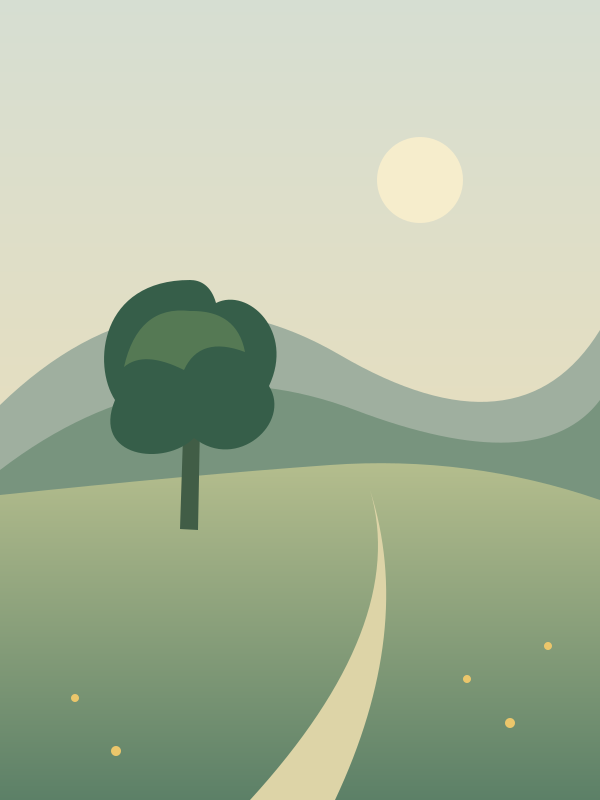

A calm camera for everyday life
The photo you
meant to take.
You saw something worth keeping.
A little guidance could help the picture feel like the moment.
Frames for you. Shows you why.

Slightly rightA little closer to what you saw.
Illustrated concept preview
The idea behind SceneRight
The moment was there.
Let the picture catch up.
The light through the kitchen window. Someone laughing before they notice the camera. A place that makes you stop.
You don’t need to know the language of photography to know what you wanted to keep.
SceneRight is being built to help with that small space between seeing it and taking it.
A little guidance
Less to think about.
More to see.
The planned experience is simple: one physical cue while you frame, then a short explanation in your own picture.
One thing at a time.
“Slightly right.” “Level.” A cue you can act on without leaving the moment.
A little understanding.
See what worked in this picture, with one thing to try next time. Read it when you want to.
The space around the tree keeps it clear.
Try next time
Move a little closer to the tree.
Built around your pictures
A good eye.
A quiet presence.
Keep the moment yours.
The plan is for photo processing and personal preferences to stay on your phone. That promise will be checked in the release build.
Let timing feel natural.
Automatic capture is planned to take the shot when the framing and moment come together.
Leave room for your taste.
Learning from the pictures you keep is part of the plan. The goal is more of what matters to you.